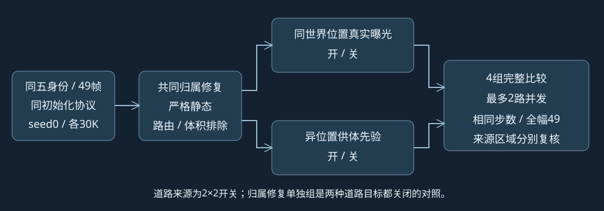

GN11 v2：三组30K消融
真实采样UTC：2026-10-19T14:05:22.517069+00:00。四组训练均已结束；表中PID为历史训练记录，不能当成当前活进程。原生四通道视频已交付，两组独立七通道已交付；其余独立渲染与完整质量复核待完成，human_verdict=null。
用户已授权各组相同五身份、完整raw89–137、相同输入初始化协议和seed0，fresh第一阶段30K、第二阶段0。完整版已完成30K训练；新组独立目录、独立优化器、每5K保存，不加载旧训练权重、不自动重放。
观看已完成两组30K的完整同步视频对比
完整版与仅跨帧，四通道、完整49帧，可同步播放、切换通道与逐帧定位。
比较结构

| 实验 | 真实 / 先验 RGB权重 | 真实 / 先验深度权重 | 实际进度 | 工程准入 |
|---|
| 完整版 | 1.0 / 0.1 | 0.1 / 0.01 | 30,000/30,000 · complete
PID 2145 | 既有CUDA零更新准入通过 |
| 归属＋跨帧真实观测 | 1.0 / 0.0 | 0.1 / 0.0 | 30,000/30,000 · complete
PID 4194 | CUDA零更新通过 |
| 归属＋左右供体先验 | 0.0 / 0.1 | 0.0 / 0.01 | 30,000/30,000 · complete
PID 5503 | CUDA零更新通过 |
| 仅归属修复 | 0.0 / 0.0 | 0.0 / 0.0 | 30,000/30,000 · complete
PID 8215 | CUDA零更新通过 |
两种来源沿用完整版原权重，关闭时权重为0；没有重新归一化、改mask、改目标颜色、扩供体或混入窗外帧。三组源码与完整版的区别仅在道路权重配置和并行准入包装；静态表示、车身监督路由、体积排除、动态完整mask alpha MSE100保持一致。
如何判断哪项有效、哪项回退
仅归属组是道路目标全关闭的对照；真实观测组对比它，检查真实观测带来的变化；供体组对比它，检查先验带来的变化。完整版分别对比两组，检查两种来源共同使用时的增益或冲突。再与原A原生第一阶段实际存在的相同步数节点比较归属修复组合的效果；缺失的旧节点不补造、不重放。旧版无初始GPU张量快照，不能把输入/seed协议一致说成旧初始参数已逐位对照。
冻结query分为7,787个同世界位置确认样本、5,119个异位置供体先验样本、2,963个未知样本；它们是raw89车身像素射线样本，不是均匀道路面积。仅跨帧组只监督OBSERVED，仅供体组只监督PRIOR；未将已有真实曝光区域改成供体区域。覆盖不同，分别检查真实曝光、先验和未知区域，同时保留完整480×320画面。
最终独立评估计划覆盖四组49帧full / dynamic / static / delete_all / alpha；实际完成范围见顶部，质量复核关注：静态车形、a6/a37动态保持、同世界位置道路、先验纹理/接缝、未知区域和阴影。全49是训练重建视图，3D框是额外归属和遮挡约束，不能称独立测试或干净背景真值。当前训练loss、准入通过和节点完整性均不替代视觉结论。
已实际核验的消融节点
| 仅归属修复 | 5,000 | 模型/Adam有限，RNG/SGCM/sampler和原生49齐全 | 独立CPU凭据 |
| 仅归属修复 | 10,000 | 模型/Adam有限，RNG/SGCM/sampler和原生49齐全 | 独立CPU凭据 |
| 仅归属修复 | 15,000 | 模型/Adam有限，RNG/SGCM/sampler和原生49齐全 | 独立CPU凭据 |
| 仅归属修复 | 20,000 | 模型/Adam有限，RNG/SGCM/sampler和原生49齐全 | 独立CPU凭据 |
| 仅归属修复 | 25,000 | 模型/Adam有限，RNG/SGCM/sampler和原生49齐全 | 独立CPU凭据 |
| 仅归属修复 | 30,000 | 模型/Adam有限，RNG/SGCM/sampler和原生49齐全 | 独立CPU凭据 |
| 归属＋左右供体先验 | 5,000 | 模型/Adam有限，RNG/SGCM/sampler和原生49齐全 | 独立CPU凭据 |
| 归属＋左右供体先验 | 10,000 | 模型/Adam有限，RNG/SGCM/sampler和原生49齐全 | 独立CPU凭据 |
| 归属＋左右供体先验 | 15,000 | 模型/Adam有限，RNG/SGCM/sampler和原生49齐全 | 独立CPU凭据 |
| 归属＋左右供体先验 | 20,000 | 模型/Adam有限，RNG/SGCM/sampler和原生49齐全 | 独立CPU凭据 |
| 归属＋左右供体先验 | 25,000 | 模型/Adam有限，RNG/SGCM/sampler和原生49齐全 | 独立CPU凭据 |
| 归属＋左右供体先验 | 30,000 | 模型/Adam有限，RNG/SGCM/sampler和原生49齐全 | 独立CPU凭据 |
| 归属＋跨帧真实观测 | 5,000 | 模型/Adam有限，RNG/SGCM/sampler和原生49齐全 | 独立CPU凭据 |
| 归属＋跨帧真实观测 | 10,000 | 模型/Adam有限，RNG/SGCM/sampler和原生49齐全 | 独立CPU凭据 |
| 归属＋跨帧真实观测 | 15,000 | 模型/Adam有限，RNG/SGCM/sampler和原生49齐全 | 独立CPU凭据 |
| 归属＋跨帧真实观测 | 20,000 | 模型/Adam有限，RNG/SGCM/sampler和原生49齐全 | 独立CPU凭据 |
| 归属＋跨帧真实观测 | 25,000 | 模型/Adam有限，RNG/SGCM/sampler和原生49齐全 | 独立CPU凭据 |
| 归属＋跨帧真实观测 | 30,000 | 模型/Adam有限，RNG/SGCM/sampler和原生49齐全 | 独立CPU凭据 |
只读CPU检查不含节点GPU恢复、不增加优化更新，也不代表视觉质量通过。完整版节点另见主报告；不能将主实验凭据冒充消融凭据。
已实际核对以下消融的前100条日志，选帧、时间扰动和日志记录的静态/动态各参数组学习率与当前完整版逐项一致：归属＋跨帧真实观测 · 归属＋左右供体先验 · 仅归属修复。环境学习率不在这份日志中；这不是旧初始GPU参数逐位比较，日志条数也不替代实际完成更新计数。
资源和证据
每个新worker设置10GiB Torch分配上限；并发训练上限为2，gate也占槽。磁盘本轮空闲33.237GB，保留全部剩余保存节点的估算需求8.000GB（增密结束前按配置点数加10%，结束后按实际点数，加共享8GB余量；不是严格点数上界）。保存空间不足时保留内存等待，不删除历史资产。
实际进程、GPU、存储与各组准入状态 · 冻结消融计划 · 完整比较合同 · CPU来源梯度与队列检查 · 隔离源码与许可证
当前完整版报告与道路来源证据 · 已完成原A/B基线
全部四组训练、评估、下载、实际质量对照和Git交付完成后，再检查所有worker与待执行控制器并按授权关机。文件和源码检查不等同浏览器UI验收。